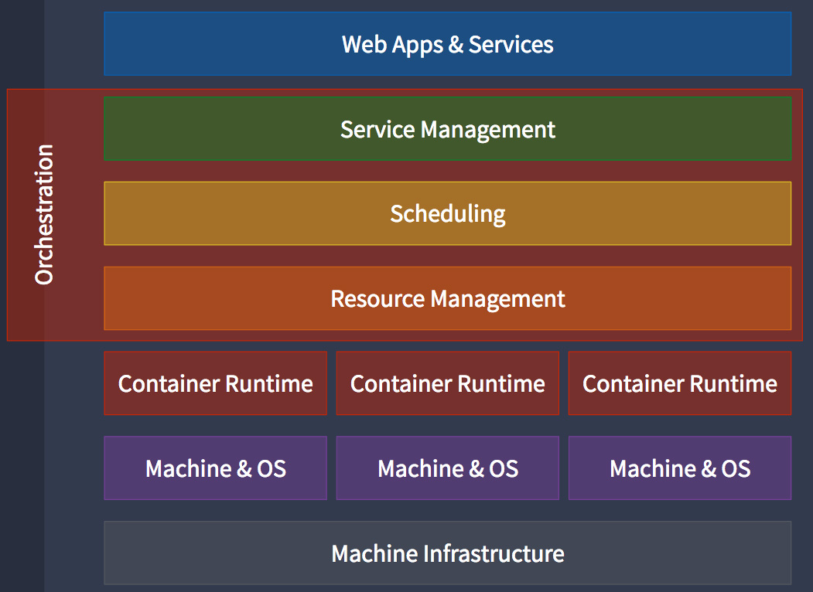

## Containers Orchestration  <!--v--> You just deployed your ML model in production **on one machine** <!-- .element: class="fragment" data-fragment-index="1" --> <!--v--> #### Questions Suppose I have a large pool of machines available * How do I **deploy my container on several machines ?** <!-- .element: class="fragment" data-fragment-index="1" --> * How do I **put the right containers at the right spot ?** <!-- .element: class="fragment" data-fragment-index="2" --> * How do I **scale (up and down) to demand ?** <!-- .element: class="fragment" data-fragment-index="3" --> * How do I **expose the http endpoints ?** <!-- .element: class="fragment" data-fragment-index="4" --> * How do I **manage failure of containers ?** <!-- .element: class="fragment" data-fragment-index="5" --> * How do I **update my model without downtime** <!-- .element: class="fragment" data-fragment-index="6" --> <!--v--> ### In reality, it's much more complex...  <!-- .element: height="50%" width="50%" --> <!--v--> ### Orchestration <p></p> <!--v--> #### The next step  <!--v--> #### Orchestration - containers are a lightweight mechanism for isolating an application's environment - specify the system configuration and libraries to install - avoid conflicts with other applications - each application as a container image which can be executed reliably on any machine - place multiple workloads on the same physical machine or distributed over many machines - orchestration for fail cases of containers or machines - allow for updates without downtime by creating new containers <!--v--> ### Orchestration Design Principles - **Declarative** - describe ideal system state - **Distributed** - use multiple machines for scale & properly use each machine resources - **Microservice** - decouple applications into individual services - **Immutable** - Change image versions, not instances <!--v--> ### Examples... - Docker Swarm - CoreOS Fleet - [Apache Mesos](https://mesos.apache.org/) / [Marathon](https://github.com/mesosphere/marathon) ... and so many more !  <!--v-->  <!--s--> ### Kubernetes ("Helmsman")  <!--v-->  <!-- .element: height="30%" width="30%" --> Kubernetes (or k8s) comes from Google's internal systems [Borg](https://github.com/SupaeroDataScience/DE/blob/master/readings/borg.pdf) It is open source now <https://github.com/kubernetes> and used... everywhere ? <!--v--> ### [Kubernetes](https://kubernetes.io/docs/concepts/overview/what-is-kubernetes/)  Kubernetes manages your containers on a cluster of machine while taking care of - Creation, deletion, and movement of containers - Scheduling (match containers to machines by ressources etc.) - Scaling of containers - Serving of containers through unified endpoints - Monitoring and healing <!--v--> Kubernetes is part of [Cloud Native Computing Foundation](https://www.cncf.io/)  <!-- .element: height="40%" width="40%" --> > As part of the Linux Foundation, we provide support, oversight and direction for fast-growing, cloud native projects, including Kubernetes, Envoy, and Prometheus. <!--v--> [Cloud Native Computing Foundation Landscape](https://landscape.cncf.io/)  <!-- .element: height="50%" width="60%" --> <!--v--> [Cloud Native Computing Foundation Projects](https://landscape.cncf.io/)  <!-- .element: height="30%" width="30%" --> <!--v--> 😱 😱 😱 😱  <!-- .element: height="40%" width="40%" --> <!--v--> 🤗 🤗 🤗  <!-- .element: height="40%" width="40%" --> <!--v--> Pods  <!-- .element: height="50%" width="50%" --> <!--v--> Pods, Nodes  <!-- .element: height="50%" width="50%" --> <!--v--> Endpoints  <!-- .element: height="50%" width="50%" --> <!--v--> Updating  <!-- .element: height="50%" width="50%" --> <!--v--> "Declarative" programming, cloud agnostic  <!--v--> "Declarative" programming : Welcome to YAML `kubectl apply -f deployment.yaml`  <!--v--> "Declarative" programming : Welcome to YAML `kubectl apply -f deployment.yaml` ```yaml apiVersion: apps/v1 kind: Deployment metadata: name: nginx-deployment labels: app: nginx spec: replicas: 3 selector: matchLabels: app: nginx template: metadata: labels: app: nginx spec: containers: - name: nginx image: nginx:1.14.2 ports: - containerPort: 80 ``` <!--v-->  <!-- .element: height="50%" width="50%" --> Example: <https://artifacthub.io/packages/helm/dask/dask> <!--v--> GCP + k8s = ❤️  <!-- .element: height="50%" width="50%" --> <!--v-->  [comic](https://cloud.google.com/kubernetes-engine/kubernetes-comic/) <!--v--> Play with k8s <https://www.katacoda.com/courses/kubernetes> <https://labs.play-with-k8s.com/> <https://github.com/yogeek/kubernetes-local-development>